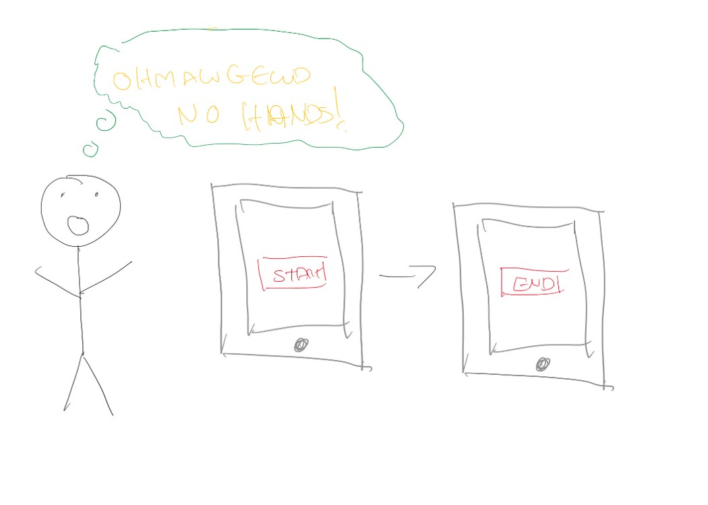

This is an article I wrote on Medium recently so that my employer Dunnhumby could share it to their own Medium publication to showcase posts by their employees. But this is my main blog so wanted to share it here for you as well.
When developing an application for any platform whether that is mobile, web or somewhere else, testing plays a vital role. The most common type of testing we are used to is Unit Testing. Now these tests play a vital role in ensuring the quality of your code and meeting requirements, but what about ensuring the UI behaves as expected when interacted with? In a large application with a lot of screens you want to automate this step to save time or simply leave it running overnight. How do you test that in unit tests? The answer is you can't. This is where UI testing plays a vital role. UI Testing is a set of tests that check the user interactions and ensure the app performs as expected when interacted with, including correct data bindings and appropriate components.

There are a few different frameworks available for carrying out UITests on a mobile device. This includes Espresso for native Android, XCTest for Native iOS, an open source cross-platform option called Appium and the one we will use, UITest from Xamarin. Be aware however that, testing iOS apps will require being run from a Mac.
The great news is that with Xamarin.UITest, you can run your tests on emulators/simulators as well as physical devices so if you don’t have a device on one of the platforms, you can still carry out your UITesting.
UITest is based off something called Calabash that is written in Ruby. This is open source and maintained by Xamarin, so UITest is a layer on top of Calabash that allows you to use C# to write your tests and NUnit to run them.
Interestingly, UITest follows the AAA pattern. You may well be familiar with the AAA concept from unit testing but just in case I will give you a quick run through of what that means. I will use an example of a profile page on the app. You might want to test that when you change your display name, the display name for the user does change on the UI.
This is where you setup the system under test so in the case of UI Testing, you would use this section to launch the application and navigate to the page that you want to test. So for the profile page test, the arrange code may launch the application, login with a test user details and navigate to the profile.
This will do as you expect and act on that system under test. So in the case of the profile scenario, it will do what is required to edit that display name by making it editable, entering a new display name then saying you are done editing.
Like in unit testing, will ensure that the results of the act stage are as you expect, literally asserting that what you expect the UI to have done has happened. With our example this is where you would check the value of the display name to ensure it is what you expect it to be aka the new display name you set in the act step.
Now writing the tests is the start but how do you actually run them on a device? The main thing of note is that you will need a packaged app available to the test runner to launch the app as mentioned in the Act stage above. But fear not as I will talk you through it here!
At this point now you have your new project, the steps will differ between Android and iOS so I will start with Android . You will need to ensure the app is not using the Mono Shared Runtime. This speeds up build/deploy for debug builds but does not work with UITest. This can be switched off in the project settings.
In Visual Studio for Windows it will be in the Android Options section of the Packaging page. On Visual Studio for Mac it is under the Android Build section. This does increase your build times so be sure to only have this unticked for UI testing. This is off by default for Release build but using Release instead means you need to ensure that the app has Internet permissions in the Android Manifest file which users may feel uncomfortable giving you. However I personally do tend to use Release builds as it is easy to forget to turn Shared Runtime back on.
As you can tell from how short the above section is on Android, apart from the Shared Runtime consideration, UITest just works out of the box for Android. Sadly this is not as easy on iOS. But this is due to the stricter security policies on iOS and the idea of 'sandboxing' that you can read about here. It protects a device/simulator from having unexpected things able to connect to it and interact with the app.
For this reason, you need to install an extra component that initialises before the tests can run. This component is a NuGet package called Xamarin.TestCloud.Agent. You just need to add this package to your iOS project.
In case you are wondering, TestCloud is the cloud based testing service from Xamarin that will run your UITests on a variety of device models, OS's and OS versions based on your preferences with thousands of devices available, all sat in their test center in Denmark I believe.
Now you have this package, just pop this single line of code into the AppDelegate.cs class inside the FinishedLaunching method:
All this does is start a Calabash server that runs inside your app for debug builds only. This server works over HTTP and allows the UITest framework to connect to it using this HTTP connection.
Now you have everything setup! As mentioned earlier, UITest supports NUnit which means you can use the same Test Explorer/Test Pad as you would for Unit Tests.
Before you can run your tests though as I mentioned earlier, you will need a packaged version of the app available. The easiest way to do this is to deploy the app to whatever device/emulator you want to use to run the tests. Once the app has been deployed and installed, it will be available for UITest when it looks for it. For Android you will want to deploy a Release build and for iOS a debug build.
It is time to run the default tests it writes when you create the project. However it requires a quick change first so you can get some actual output. The default code ensures it can take a screenshot and this is a great first test for any UI testing, however it doesn't actually save the output on local devices which is no good. So let's go ahead and do that.
Add the following in AppInitializer.cs:
By default, StartApp doesn't configure the app that's being tested. It assumes that is part of the current solution. Which may be true but there also may be multiple other projects so lets be explicit.
In Visual Studio for Mac:
Open the Test Pad and expand the node for your UITest project
Right-click the Test Apps node, select Add App Project then click against the iOS and Droid projects.
In Visual Studio for Windows:
Ensure you have the NUnit 2 test adapter extension for Visual Studio installed. You can check this from Tools -> Extensions and Updates
iOS isn't supported on Windows due to the need for a Mac Build Agent so go ahead and delete the [TestFixture(Platform.iOS)] attribute from the tests class to avoid it showing up in the test explorer.
Unlike on Mac, there is no easy way to configure which app to run so this will need to be done in code. Update the ConfigureApp method you changed before to enable local screenshots to have the following after the .EnableLocalScreenshots() and before .StartApp();:
Note that this file path will need to be checked it is correct as your path may be slightly different based on folder structure. You can get the package name for your project from the Android Manifest file. Also note the -Signed bit at the end, this is just for release builds so if you decided to test with a debug build you will not need this.
Now this is done, go ahead and run the tests. All going well you will now see it load your application and take a screen shot. Boom!
You are now free to go ahead and write more useful UITests that actually test the functionality you have in your app.
Just like in WPF or HTML, UITest sees your app as a visual tree. The base layout, such as StackLayout or RelativeLayout is the parent, then something inside of that, maybe a label would be one of its children. This parent may have a RecyclerView as its own parent or another layout as a sibling.
This is useful to know because you query the UI based on this visual tree. It will look inside the visual tree for components that match what it is looking for based on something such as identifier, text or class type. You can also query based on relationship so parent, child or sibling.
When you write UITests, you use app queries to find the controls that you want. If your visual tree is complex it can be harder to know what queries to write which is where the REPL comes in handy. A REPL or Read-Evaluate-Print-Loop is a command-line tool that you may be familiar with from other languages or frameworks such as Python or Node.
UITest comes with a really useful REPL. It is available in the IApp interface so just add add.Repl(); at the start of a test and it will launch when you run the test. Be aware it will never close unless done manually so make sure to remember to remove this line once you are finished writing the test.
To avoid making this post too long I will not go into it here, however there is a great post here from Microsoft Docs which explains REPL and how to use it.
The easiest way to find components is to assign identifiers to them on both platforms, using the same name for controls carrying out the same function on both platforms. This id can then be used as part of a query on your app. In Android the id is set with the id property and on iOS it is the AccessibilityIdentifier property on the components.
App queries are in fact nothing more than lamba expressions so you could actually do something as simple as this:
app.Query(c => c.Id("LoginButton"));
This would find the LoginButton but not actually press it. So you would follow that line with:
app.Tap(c => c.Id("LoginButton"));
There are lots of methods you can carry out that you can learn by typing app. in the REPL and seeing what it returns.
The other thing to try and get in the habit of with apps is ensuring that you automatically assign those identifiers for matching components across platforms when you create them as it saves a lot of time when writing UITests. As mentioned earlier you can of course find a component based on it's text but this is not recommended as you may take advantage of a platform specific component such as the Android floating action button which won't have the same text so it is easier and safer to stick to identifiers.
Arrange is carried out by the BeforeEachTest setup method so inside your test for the AAA pattern you will use app queries to act on the UI but also to assert the results. So for our display name scenario we would get the text for the display name and ensure it matches what we changed it too.
One thing to note with assertions is that you will want to take advantage of a method called WaitForElement. This means it will wait for a configurable amount of time (default is 10 seconds) for an element to appear. This allows time for things to happen.
Below is an example test you might write for that profile scenario I mentioned earlier:
There you have it! In this post you learned about what UI testing is and why it is helpful to test the interactions of your UI. You learned about the different options for UI testing and how for native Xamarin apps you can use Xamarin.UITest. We also covered how to set your device up for testing and how to start writing your tests by using queries against the visual tree.
If you want to learn more about creating native cross-platform mobile apps using Xamarin including unit tests, UI tests and deploying to the stores, I highly recommend this book from Jim Bennett. This post and everything I know about UI test is thanks to this book.
Happy testing!